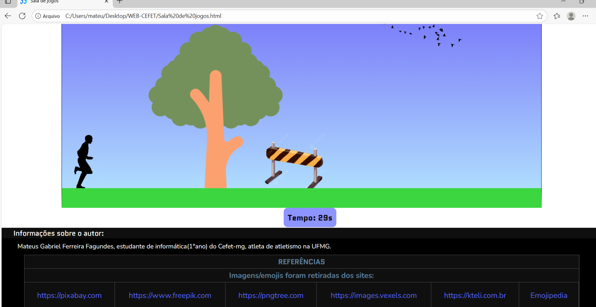

Página BioHazard
Página destinada a itens adicionados(opcionais)
Coisas interativas na página:
Jogo destinado a promover o interesse no atletismo!
Ao clicar nessa imagem, será emitido um som!
Página destinada a itens adicionados(opcionais)
Jogo destinado a promover o interesse no atletismo!
Ao clicar nessa imagem, será emitido um som!